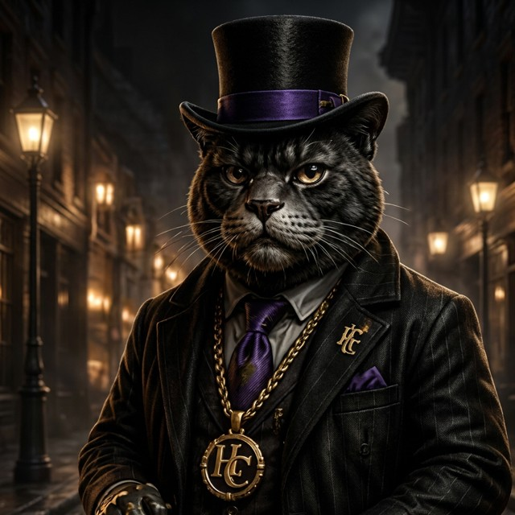

Jay Paws
Reads the room fast, calls out anyone playing a part instead of being real. Quick with a line, quicker to push back on Leo when he thinks he's wrong.
Podcatz
Leo — a white tabby, the calmest voice on the block — hosts Podcatz from inside the clubhouse. No script that can't breathe, no topic that's off the table. Just the crew, a mic, and whatever's actually on their mind that week.
The Host
Leo doesn't host like he's performing. He hosts like he's holding court on a porch — calm pace, sharp questions, and a habit of letting silence do the work when a guest needs a second to actually answer honestly. Confidence, on this show, is never loud.
Every episode opens the same way: no hype reel, no countdown. Just Leo, the mic, and a line that sets the tone for whatever's coming.
"Confidence ain't loud. It's just knowing who you are."

Host — white tabby, lead presence
Recurring Guests
Jay Paws and Organ Paws don't agree on much, and that's exactly why they're on the show every episode.
Reads the room fast, calls out anyone playing a part instead of being real. Quick with a line, quicker to push back on Leo when he thinks he's wrong.
Slower, more measured — the one who turns Jay's callouts into an actual point. Where Jay pushes, Organ explains why the push matters.
Episodes
Jay Paws and Organ Paws sit down with Leo for the first time. Introductions, first real disagreement, and the start of a running bit neither of them will let go.
Why people hide who they really are, and why it usually backfires. Jay Paws: "People switch up depending who's watching." Organ Paws: "That's because they're scared to stand alone." Leo closes it out simple: confidence over cover.
Recorded live from the clubhouse floor — the same room where the crew hangs, plays cards, and occasionally throws down a breakdance cypher. Stories from the block, told by the people who lived them.
Behind the Mic
Podcatz isn't a studio show. It's shot inside the clubhouse — purple lighting, the mic table, the crew posted up around it like it's any other night. Cutaways catch Rico reacting, Bonny laughing, A.R.F. shaking his head at whatever Jay Paws just said. That's the format: real reactions, not a laugh track.
Catch the crew on the block between episodes, or check the full lineup on Gallery.